Generated from the Markdown source. Use Operating the lab for the completed installation.
OCNE 1.9 and Oracle RAC 19.32: end-to-end manual
Four chapters, in the requested execution order. See the 28-scenario test table for descriptions, commands, expected output, actual results and full transcripts. Prepared 11 October 2026 from this lab's scripts, Oracle sources and recorded results. Start here for a new build; use chapter 4 for an existing database.
| Order | Prerequisites | Installation / exercises |
|---|---|---|
| 1. OCNE lab | 1a: host, golden VM, inventory and access | 1b: cloning, Linux, OCNE, Kubernetes and NFS |
| 2. Database Operator | 2a: healthy Kubernetes, versions, permissions and manifests | 2b: cert-manager, RBAC, operator and verification |
| 3. RAC database | 3a: hardware, storage, networks, OS, image, homes, secrets and CVU | 3b: complete YAML, provisioning, SQL acceptance and connections |
| 4. Operations | 4a: understand ownership and establish health | 4b: kubectl exercises, pod replacement, stop/start and troubleshooting |
Every command block identifies its execution context. Run one step, inspect its result, and then continue. Commands beginning with kubectl run as labadmin on the control-plane VM unless stated otherwise. Bash commands execute inside Oracle Linux; PowerShell commands execute on Windows. Output blocks are either dated captured output or explicitly illustrative, never fabricated observations.
For a new environment, first fill in the inventory in chapter 1 and edit the non-secret YAML/configuration consistently. Disk serials, UUIDs, network interfaces, DNS servers, SSH host fingerprints and free attachment slots must come from that environment. A configuration edit does not rewrite every command in this book. Do not paste all chapters into a single terminal. Formatting an unidentified disk cannot safely be made a blind operation.
What you are building
An OCNE operator VM runs the OCNE management CLI/API. It is different from Oracle Database Operator, a Kubernetes controller installed later. Kubernetes runs on one control-plane VM and two worker VMs. The database controller watches a RacDatabase custom resource and creates two RAC node pods. Each pod contains Grid Infrastructure and one database instance. Both instances open the same database stored on shared ASM disks.
| Term | Meaning in this lab |
|---|---|
| Pod | Kubernetes execution unit containing the RAC container; a replacement has a new UID even if its name is reused |
| StatefulSet | Kubernetes controller maintaining a named pod; this operator creates one StatefulSet per RAC node |
| CRD / custom resource | CRD installs the API type; rac/rac19c is one request to provision a RAC database |
| Operator / reconciliation | Controller compares requested configuration to observed state and performs supported actions |
| CNI / Multus / NAD | Pod networking; Multus attaches extra networks described by NetworkAttachmentDefinitions |
| GI / CRS / ASM | Grid Infrastructure; cluster resource management; shared Oracle disk management |
| CDB / PDB / instance | Container database RACCDB; pluggable database LABPDB; processes and memory RACCDB1 or RACCDB2 |
| Service | Kubernetes Service routes TCP; Oracle service labpdb_app selects the database/PDB workload |
| PV / PVC | Kubernetes storage object and its claim; here shared raw block devices, not NFS files |
| Gold home / slim image | Already-patched Oracle software archive / OS-and-runtime container into which homes are extracted |

Mermaid diagram source
flowchart TB
W["Windows workstation\nD:/OCNE19-Lab"] -->|"SSH 2220-2223"| N["VirtualBox NAT network\n192.168.77.0/24"]
N --> O["ocne-op .10\nOCNE CLI/API + NFS\n4 GiB / 2 CPU"]
N --> C["ocne-cp .11\nKubernetes control plane\n8 GiB / 4 CPU"]
N --> A["ocne-w1 .12\n22 GiB / 6 CPU\nracnode1-0: RACCDB1"]
N --> B["ocne-w2 .13\n22 GiB / 6 CPU\nracnode2-0: RACCDB2"]
C --> D["Database Operator 2.2.0\nwatches rac/rac19c"]
D --> A
D --> B
A <-->|"private .78 and .79 interconnects"| B
A --> S[("Shared ASM DATA\n2 x 50 GiB\nEXTERNAL redundancy")]
B --> S
O --> F[("Separate 100 GiB NFS\n/srv/nfs/share")]
G["ol9-golden\npreserved, powered off"] -.->|"full clones, once"| N
Storage is deliberately separate: OS disks boot guests; container disks hold CRI-O layers; scratch holds Oracle homes and staged ZIPs; shared block disks hold ASM/database data; the operator's NFS export serves general lab files. EXTERNAL ASM redundancy provides no ASM mirroring. A single Windows host and a single Kubernetes control plane do not provide infrastructure high availability.
Tested inventory and honest limits
Observed: Windows 11 Home, VirtualBox 7.2.18, Oracle Linux 9.8, UEK R7 5.15.0-324.217.5.3.el9uek.x86_64, OCNE 1.9.6, Kubernetes v1.29.14+2.el9, CRI-O 1.29.1, Database Operator 2.2.0, cert-manager 1.17.4 and RAC 19.32. The image and gold homes are supplied by the lab owner; this repository does not distribute Oracle binaries or grant software licenses.
This is a historical-version home lab. OCNE 1.9 is in Sustaining Support; cert-manager 1.17 is outside community maintenance. The requested operator/control-plane RAM of 4/8 GiB is below Oracle's 8/16 GB minimums. Workers stay at 22 GiB each. Successful installation is not vendor certification, production sizing or a performance result. Recheck the cited compatibility tables when rebuilding rather than mixing in current component releases.
The original lab passed an OCNE/NFS ordered restart on 1 October. RAC completed on 11 October: two OPEN instances, LABPDB READ WRITE on both, 19.32 SQL patches successful, SGA 3 GiB / PGA 2 GiB, USE_LARGE_PAGES=FALSE, and SQL connections through both worker listeners passed at 18:45 UTC. Subsequent controlled exercises covered both instance stops/starts, application service maintenance, both worker cordons, both pod replacements and Database Operator restart. Pod2 required assisted GI recovery after an SELinux-label failure; pod1 recovered but logged a duplicate-start/INS-40401 image defect. Both pods now use the no-HugePages resource template. RMAN backup plus RESTORE VALIDATE passed. Both SQL paths and memory/PDB checks remained healthy at11:44UTC12October. Actual restore, worker failure and a complete post-RAC power cycle remain untested; the workbook marks these limits.
The existing CR retains an immutable legacy service name and a stale ORCLPDB connection summary. The working application service is labpdb_app mapped to LABPDB. Fresh builds use rac-database.yaml; this existing deployment uses rac-database-live.yaml for in-place reconciliation. Do not apply the fresh service-name change to the existing CR. Chapter 3 explains the incident and prevention.
How to keep your own execution record
Record date/time, command, exit code, actual identifiers, verification and unresolved issues after each gate. Use RUN-LOG.md and CLONING-RUN-LOG.md as examples. Keep raw output under ignored logs/, binaries under ISO/, disks under vms/, and private keys/credentials under private/ or protected guest paths. Do not capture passwords, kubectl get secret -o yaml, kubeconfig contents or installer command lines containing passwords into a public transcript.
This manual incorporates and extends the cloning guide, full OCNE installation guide, and RAC prerequisite guide. The adapted OCNE/NFS documentation retains CC BY-SA 4.0 attribution and licensing as reproduced in chapter1. Oracle code retains its UPL license, and cert-manager retains its Apache2.0 license. Windows/VirtualBox orchestration, resource sizes and the observed troubleshooting adaptations are local implementation.